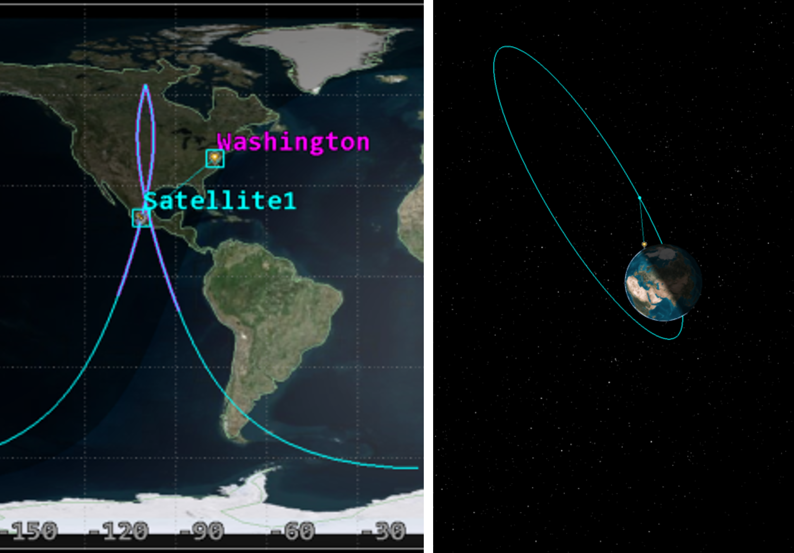
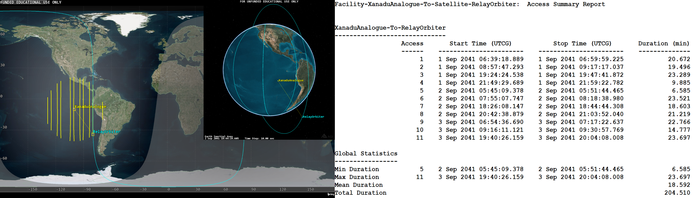
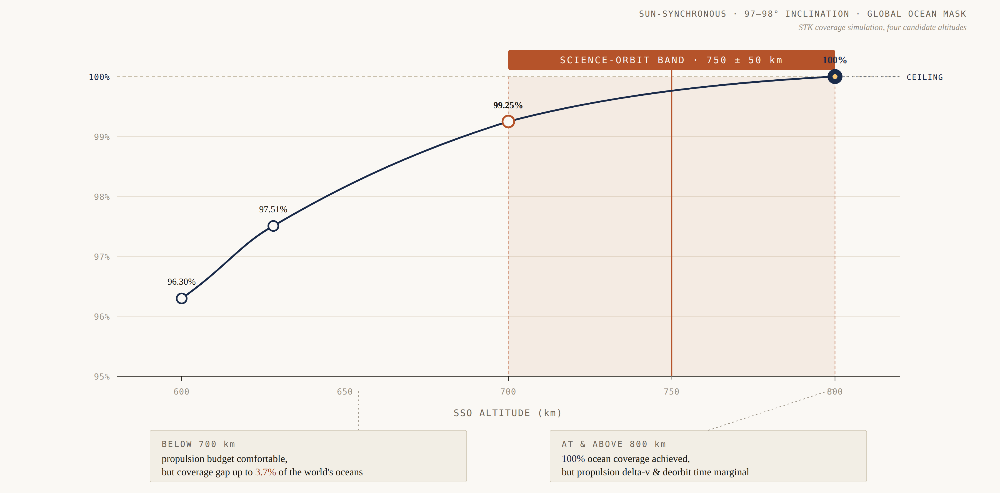

01How to read this page
STK is a tool, not a deliverable. What matters is what the simulations were used to decide. The four exercises below are arranged in increasing order of mission complexity — from a teaching workshop with a Molniya orbit and a chosen target, through a real CubeSat orbit selection, to an interplanetary access study where the licence had to be worked around, and finally a concurrent-engineering session where the orbit choice fell out of a coverage requirement on a global ocean mask.
Across all four, the discipline I take from this work is the same one I took from a decade of seismic interpretation: the simulation output is not the answer; the explanation of the simulation output is the answer.
02Exercise 1 — Foundational orbit workshop
A six-person team workshop covering the basics of orbital mechanics in STK: scenario setup, classical orbital elements, ground-track behaviour, and J2 perturbation. The deliverable structured itself around three concrete questions that each forced a specific feature of the tool to be exercised.
Q1 — How long can a Molniya orbit see Washington DC?
Built a Molniya orbit (63° inclination, highly elliptical, classic Russian-telecommunications profile), inserted Washington DC as a place of interest, computed access. Two passes per day: 11.233 h and 4.950 h, total 16.183 h visibility. Only the first pass is operationally useful — the second has poor line-of-sight and high path loss, more suited to downlink to Russian ground stations than target observation. The exercise made the point that "access" is necessary but not sufficient for a useful pass; sensor geometry and link budget filter out a substantial fraction of raw visibility.
Q2 — How do Kepler parameters and J2 perturbation actually behave?
Systematically varied semi-major axis, eccentricity, inclination, RAAN, argument of perigee, and true anomaly to see ground-track effects. Then enabled the J2 propagator and ran a one-year scenario at 45° inclination, 20,000 km, e = 0: RAAN drifted from 0.487° to 312.704° over the year, lapping past 360° as expected for a non-sun-synchronous inclination. Re-ran with eccentricity 0.6, inclination 10°, and observed argument-of-perigee drift from 359.167° to 312.118° over the same year. Numbers are not the point — the intuition for why J2 forces sun-synchronous design choices is.
Q3 — When can ISS be seen from Strasbourg?
Pulled the ISS Zarya orbit from STK's standard object database, set ISU as the observer (by address), computed access over a 21-day window. Naive answer: 131 passes. With three layered constraints (Strasbourg in umbra so the sky is dark; ISS in direct sun so it is illuminated; minimum elevation 6° for terrain clearance): 33 visible passes, totalling 3.124 h, longest 8.16 minutes on Dec 1st and Dec 14th. The point of this exercise was to internalise the difference between geometric access and actual observability — and to build the muscle for layering realistic constraints on top of an idealised orbital geometry.

03Exercise 2 — Sun-synchronous orbit selection for the Eyesat-1 CubeSat
For the Eyesat-1 CubeSat project, I led the orbit selection. The mission objective is daytime visible imaging of hurricane cloud structures with an OV7670 camera, which constrains lighting and revisit considerations directly. Three-day STK simulations were run to extract operationally relevant parameters.
The selected orbit is a sun-synchronous LEO at 520 km altitude, 97° retrograde inclination, near-circular (e ≈ 0). Three reasons drive each parameter:
- SSO orbit — because the camera is daytime-visible only, the orbit must precess around Earth at the same rate the Sun appears to move, giving consistent lighting and the same local solar time at each pass over a given hurricane basin.
- 97° retrograde inclination — near-polar to ensure global coverage over the mission lifetime, retrograde to match the SSO precession requirement against J2.
- 520 km altitude — orbital period ≈ 94–96 min, ~15 orbits per day, swath revisit over a given target area on the order of three days. Crucially, at 520 km a 1U CubeSat (~1.0–1.2 kg, cross-section ~0.01 m², CD ≈ 2.2) decays naturally within ~5 years through atmospheric drag, well inside the 25-year debris-mitigation guideline. No propulsion required.
The choice of altitude was the substantive engineering decision. Higher would have improved swath but pushed deorbit beyond 25 years and added propulsion mass; lower would have shortened mission lifetime below the one-year minimum. 520 km is the sweet spot where the altitude argument simultaneously satisfies the imaging requirement, the deorbit regulation, and the no-propulsion constraint.

04Exercise 3 — Earth-analogue access analysis for the Titan swarm
For the Titan hybrid swarm project, the mission concept needed an STK access study between the relay orbiter and the surface swarm. STK's licence at ISU does not include the planetary-bodies extension that would let us simulate a Titan-centric orbit directly. The workaround was to run the simulation in an Earth-analogue orbit with matched geometric parameters, then scale the results to Titan analytically.
Earth analogue
An Earth-analogue orbit at 2,474 km altitude was constructed to match the Titan orbiter's geometric parameters. STK simulation produced 11 passes in 3 days, durations 6.6 to 23.7 minutes (average 18.6 min, total 204.5 min).
Scaling to Titan
The Titan orbital period is 3.94 hours (T = 2π·√(a³/μ) with Titan's gravitational parameter). Pass durations scale by the period ratio: 236.3 / 138 = 1.71×, giving an average Titan pass of 31.8 minutes. The ground-track shift per orbit is 3.7° (Titan rotates at 0.94°/hr), so the 62° visibility window from a swarm node accommodates 17 consecutive passes per burst. Two burst windows occur per 16-day Titan rotation (ascending and descending nodes), separated by ~5-day gaps.
Why this matters for the design
The bursty access pattern was not just an analytical curiosity — it forced a real design change. The on-board computer's data buffer requirement was originally sized for a 48-hour gap between communication opportunities. The STK analysis revealed the actual pattern is 5-day gaps between burst windows, and the OBC buffer requirement was resized from 48 hours to 8 days. Data margin then increased to +187%. This is the kind of feedback loop between simulation and requirements that the systems engineering thread of the project depends on.

05Exercise 4 — Ocean-coverage AOCS analysis for a concurrent-engineering altimetry mission
The concurrent-engineering workshop in April 2026 was a one-week multi-discipline design study for a satellite altimetry mission requiring ocean-surface coverage. I owned the AOCS thread, and within that, the orbit-selection question reduced to: what is the lowest sun-synchronous altitude that achieves 100% global ocean coverage with the chosen swath and revisit?
Method
Built a global ocean mask, then ran STK coverage simulations at four candidate altitudes against a sun-synchronous orbit at 97–98° inclination. The deliverable was a coverage-versus-altitude curve, with the curve reading directly off the ocean-mask intersection rather than a generic geographic coverage metric.
Results
- 600 km altitude — 96.30% ocean coverage
- 628 km altitude — 97.51% ocean coverage
- 700 km altitude — 99.25% ocean coverage
- 800 km altitude — 100% ocean coverage
The recommended science orbit assumption was 750 ± 50 km, sun-synchronous, 97–98° inclination — sitting just below the altitude that closes the coverage requirement, with the band reflecting downstream subsystem trades (propulsion delta-v budget, payload swath, debris-mitigation deorbit time). The 800 km point hits 100% coverage but at a propulsion cost the propulsion subsystem flagged as marginal; 700 km falls 0.75% short of 100% but is comfortably within the propulsion envelope. The chosen altitude band is exactly the kind of compromise that concurrent engineering exists to surface.
Why this matters
The exercise sits in the lineage of real European altimetry missions (Sentinel-3, SWOT, the Sentinel-6 family). Treating the ocean as the coverage target rather than the land surface forces a deliberate choice of inclination and altitude, and the 100% threshold is harder to reach than a generic global-coverage metric implies. The sub-1% shortfall at 700 km would, in a real mission, drive negotiation between AOCS, propulsion, and the science team — exactly the conversation concurrent engineering is structured to have.

06Across the four exercises
Each of the four sits in a different layer of the mission-analysis stack. The workshop is foundational tool fluency; Eyesat-1 is single-spacecraft orbit selection driven by payload constraints; the Titan analogue is a worked example of using a tool past its licence boundary; the concurrent-engineering ocean coverage is a multi-subsystem trade where the orbit falls out of a coverage requirement.
Together they cover the range I would expect to be useful for any EO or programme-management role at agency or prime: I can set up scenarios, derive operationally relevant parameters, layer realistic constraints on top of idealised geometry, work around tool limits, and feed simulation results back into requirements documentation. STK is the tool; the mission decisions are the work.